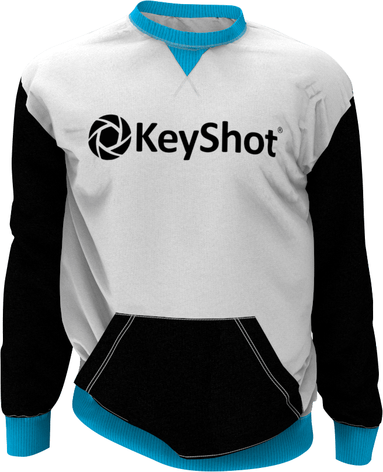
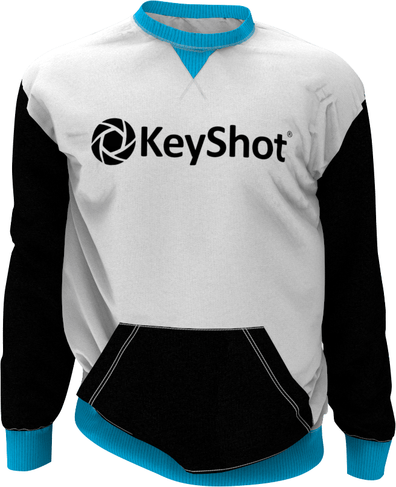

Introdução ao
Criatividade
sem limites
KeyShot 9 oferece uma capacidade criativa ilimitada para ajudá-lo a realizar suas idéias mais rapidamente. Construído como o centro de todas as suas necessidades de visualização, KeyShot oferece uma facilidade, simplicidade e acessibilidade incomparáveis para lhe dar total liberdade criativa e um nível de agilidade visual que lhe permite explorar seu design a uma velocidade de pensamento sem igual.
RealCloth
RealCloth é uma tecnologia patenteada Luxion pendente que impulsiona um novo e poderoso tipo de material que permite a criação e visualização de materiais de tecidos realistas. O tipo de material fornece controle do padrão de tecido (Pro) e a capacidade de adicionar fibras voláteis facilmente. Novos materiais do RealCloth também foram adicionados à Biblioteca.


Denoise
Renderizações suaves, rápidas e bonitas apenas pressionando um botão. O Denoise funciona tanto em modo CPU como em modo GPU para eliminar o ruído na visualização em tempo real e na saída de renderização. Converte essa contracção de tempo numa economia de tempo. Acenda Denoise e veja como sua imagem é renderizada até 30 vezes mais rápido com a vantagem de usá-la em um número ilimitado de KeyShot Image Styles.
GPU Mode
KeyShot 9 introduz a capacidade de aproveitar toda a potência de traçado de raios acelerada na GPU NVIDIA RTX com Optix. Disponível para renderização em tempo real e renderização local, O modo GPU do KeyShot permite o acesso aos recursos da GPU com um clique para aproveitar o escalonamento do desempenho de várias GPU e o hardware de aceleração de rastreamento de raios dedicado nas GPU aptas para RTX da NVIDIA.


Biblioteca de modelos 3D
KeyShot 9 lhe oferece uma nova biblioteca de modelos cheia de modelos 3D da mais alta qualidade, especialmente curados para complementar os produtos de sua cena. Todos os modelos 3D vêm completos com materiais e texturas, e são facilmente procurados, filtrados e adicionados a qualquer cena com um simples arrastar e soltar do KeyShot Cloud.
Web Configurator (PRO)
KeyShot 9 introduz o poder de gerar configuradores de produtos interativos baseados em navegador. Com variações de produtos totalmente renderizados utilizando os modelos, materiais e estudos de sua escolha, Os configuradores web podem ser produzidos para compartilhamento online em forma privada ou hospedados para proporcionar uma experiência de escolha de produto mais atraente.


Liberdade Criativa
Abra a sua imaginação agora.Com novos materiais e texturas, o KeyShot 9 abre sua liberdade criativa para um novo nível de detalhe e controle sobre as imagens de seus produtos.
Fuzz Material (PRO)
Para essa sensação quente e difusa.Essa sensação quente e difusa que te inunda não está em sua cabeça, é um novo sombreador de geometria de material que traz um novo nível de realismo a seus produtos. Basta abrir o KeyShot Material Graph (Pro) e adicionar qualquer quantidade de fio que você precisa na superfície de qualquer material. Controla o comprimento, a aleatoriedade, a densidade e muito mais para conseguir um aspecto perfeito e difuso.

Contorno de Textura (Textura)
A borda que você precisa.Imagine colocar uma vantagem em qualquer material. Com o contorno como textura, agora tem mais controle e flexibilidade ao criar materiais personalizados. Você pode usá-lo para adicionar um efeito de ilustração sobre materiais do mundo real como metal ou plástico.

Controle da curva de animação (PRO)
Coloque-o com cuidado. vire-o para fora.Controlar sua animação nunca foi tão fácil. Personalizar o movimento ou a aparência de uma animação ou de uma cor de material, bump, opacidade ou outra propriedade. Adicione rapidamente controles ao longo da curva e ajuste tudo em tempo real para criar incríveis animações de peças e materiais.
Material genérico (BRDF)
As últimas possibilidades de material.Só é genérico de nome. A flexibilidade que você adicionar é tudo menos. Ajuste as propriedades de brilho, verniz, metal, anisotrópico e muito mais. É um novo material que oferece inúmeras possibilidades para criar acabamentos de materiais incríveis.


Agilidade visual
Acredite como nunca antes.KeyShot 9 agiliza a importação, amplia a compatibilidade e amplia a saída para oferecer um fluxo de trabalho mais ágil do início ao fim.
Importação simplificada
Simplificado para começar a criar mais rápido.Isso foi muito rápido. E com as novas opções de importação projetadas para acelerar a eficácia das importações, estará em sua cena e no renderizado em um abrir e fechar de olhos. Importe arquivos KeyShot para cenas, salve as configurações de importação e muito mais.

Importação de pintor de substâncias
Faz essas texturas saltarem.Passa de uma experiência de textura envolvente para uma experiência de renderização 3D envolvente. KeyShot 9 gera automaticamente os materiais KeyShot a partir dos conjuntos de texturas que são criados em substance Painter. Não há necessidade de mapeamento ou ajustes adicionais, apenas arraste e solte a textura de seu substance Painter onde você quiser para obter o belo resultado final que você precisa.

Plugin Browzwear VStitcher
Veja suas roupas sob uma nova luz.KeyShot 9 introduz um novo plugin para software líder em 3D para o design e desenvolvimento de roupas. Envie suas roupas de VStitcher diretamente para KeyShot 9 com todas as cores e texturas incluídas. É um novo nível de visualização de roupas fotorrealistas.
 

X-Rite AxF ™ 1.6
Materiais profundos, ricos e maravilhosos.O formato de troca de aparência padrão da indústria (AxF) X-Rite tem ainda mais potência e é totalmente compatível com KeyShot 9. O formato de arquivo flexível mostra agora atributos de aparência precisos para materiais translúcidos e turvos semelhantes ao plástico.

Velocidade de pensamento
The Flexibility to Visualize faster.O KeyShot é rápido. Desde a configuração da cena e a interação em tempo real até o que você faz e a reação, o KeyShot 9 oferece as capacidades que você precisa para criar com rapidez.
Menu Ferramentas
Acesso mais rápido para começar a criar mais rápido.Geometria, material e ferramentas de câmera em um só lugar. Os novos menus de Ferramentas KeyShot 9 consolidam o acesso às suas ferramentas favoritas, permitem que você edite a geometria mais rapidamente e adiciona a nova ferramenta de Importação de Material para aplicar as aparências rapidamente. São as melhorias no fluxo de trabalho como esta que tornam o KeyShot tão agradável de usar.

Configurador de subcomponentes e miniaturas (PRO)
Um novo nível de opções de produtos.Os modelos de pais e componentes obtêm um novo terceiro nível de dependência para ampliar as opções de produtos e criar grupos maiores de variações. E agora, adicione miniaturas personalizadas de modelos e materiais ao seu Configurador para comunicar as opções exatas do produto.
Testar KeyShot
Baixe o KeyShot e veja quão rápido você pode criar imagens fotográficas surpreendentes de seus dados em 3D.
Testar Agora